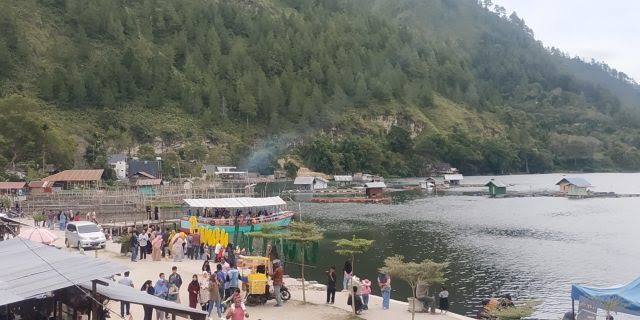
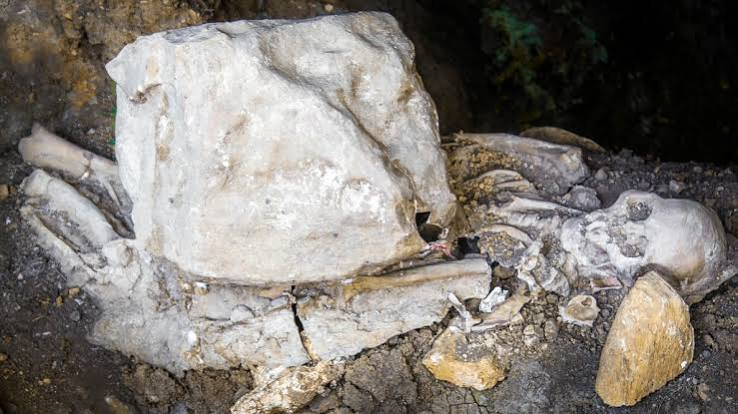
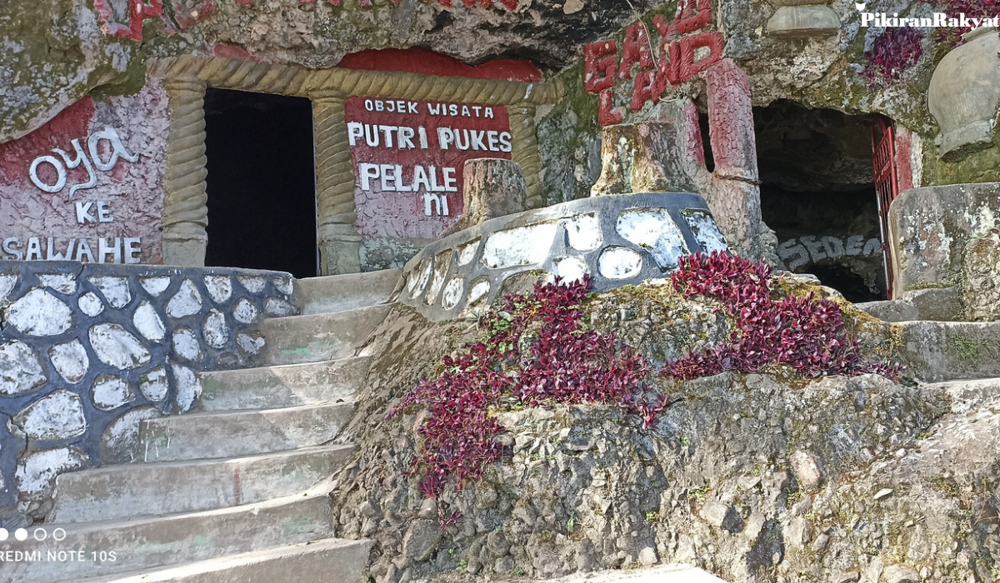
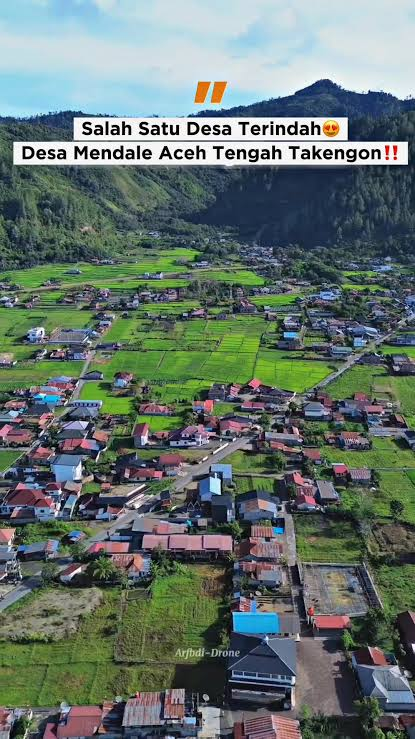
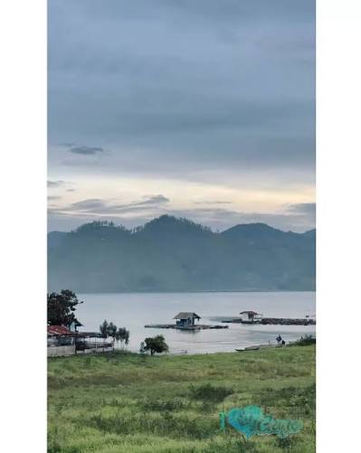
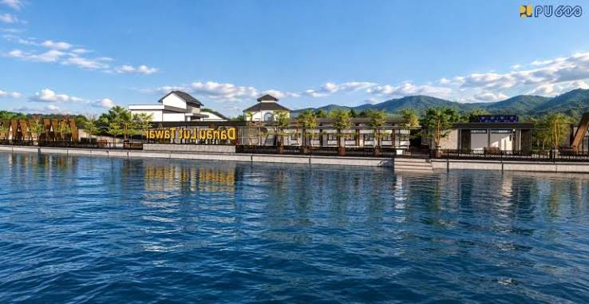

Wisata Mendale
Nikmati suasana alam, danau, dan keramahan masyarakat Mendale dalam satu perjalanan.
Ruang bertemunya keindahan alam, cerita rakyat, budaya Gayo, dan keramahan masyarakat Mendale.
Jelajahi Destinasi ↓ Hubungi KamiPokdarwis Peteri Pukes Mendale hadir untuk mendorong pengembangan pariwisata berbasis masyarakat, menjaga alam, serta memperkenalkan kekayaan budaya Gayo kepada pengunjung.
Kami mengembangkan pengalaman wisata yang ramah, autentik, dan berkelanjutan—dari pesona alam hingga cerita dan tradisi yang hidup di tengah masyarakat.
“Datang sebagai wisatawan, pulang membawa cerita.”
Temukan alam, budaya, dan keramahan lokal dalam satu perjalanan.
Kenali beberapa daya tarik wisata yang menjadi bagian dari cerita Peteri Pukes Mendale.

Nikmati suasana alam, danau, dan keramahan masyarakat Mendale dalam satu perjalanan.

Destinasi bernuansa sejarah dan geologi yang mengundang rasa ingin tahu para penjelajah.

Jelajahi ruang alam yang lekat dengan cerita dan legenda yang diwariskan turun-temurun.
Pengalaman wisata tidak hanya tentang tempat, tetapi juga tentang nilai, cerita, karya, dan masyarakat.
Area ini siap diisi foto destinasi, kegiatan Pokdarwis, budaya, dan dokumentasi wisata terbaru.

MENDALE
DANAU MENDALE
PESONA ALAMUntuk reservasi, kunjungan kelompok, paket wisata, kolaborasi, atau informasi destinasi, silakan hubungi pengelola.
Lokasi
Mendale, Aceh Tengah, Aceh, Indonesia
WhatsApp
Nomor WhatsApp pengelola — silakan ganti di file website.
Media Sosial
Instagram / Facebook Pokdarwis Peteri Pukes Mendale